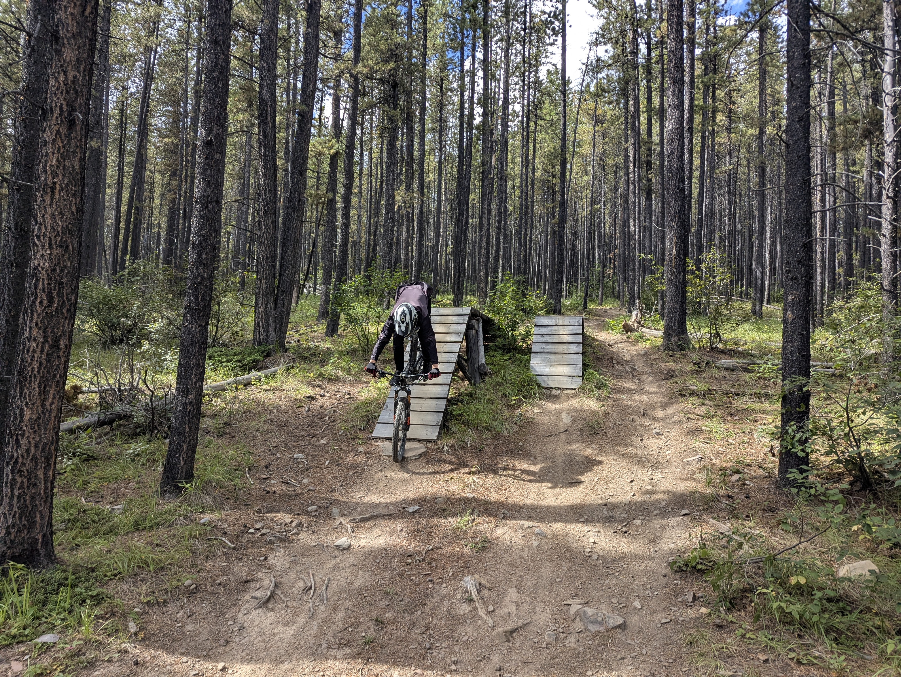

01 / Outdoors
Outdoors
Beyond coursework, assignments, and deadlines, I love to get outdoors, be active, and to spend time with family and friends. I enjoy many outdoor activies, such as mountain biking, skiing, and hiking, and ultimate frisbee.